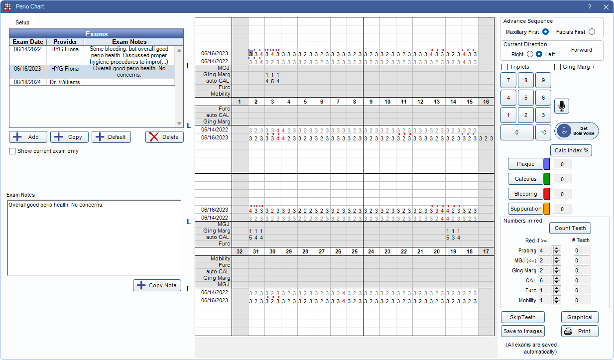
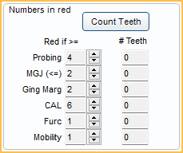

Perio Chart
Use the perio chart to record perio exams.
In the Chart Module, click Perio Chart.
 See our video: Perio Charting.
See our video: Perio Charting.
Only users with the Perio Chart Edit Permission can make changes to measurements on existing exams or create new exams.
Setup
Click Setup to edit default perio exam probing depths. Enter measurements in sets of three, separated by a comma (e.g., 323, 323, etc.) for each tooth. Each box requires 48 digits.

- Upper Facial: Enter probing depths for the upper facial teeth from left to right.
- Upper Lingual: Enter probing depths for the upper lingual teeth from left to right.
- Lower Lingual: Enter probing depths for the lower lingual teeth from left to right
- Lower Facial: Enter probing depths for the lower facial teeth from left to right.
Set All 323: Automatically set probing depths of "323" for all teeth. This overrides any measurements currently entered.
Click Save to exit the window and keep changes.
Exams
Up to six of the most recent exams are displayed for comparison.

- Double-click an exam to edit the date, provider, or exam note.
- Add: Create a new blank perio exam. A provider is automatically assigned to a new exam using the following logic:
- The provider associated to the logged-on user is the default.
- If no provider is associated with the user, the patient's secondary provider is used.
- If no provider is associated with the user and there is no assigned secondary provider, the patient's primary provider is used.
- Copy: Only available for users with the Perio Chart Copy permission. Create a copy, with today's date, of the most recent exam.
- Default: Add a new perio exam with default measurements.
- Delete: Delete the selected exam.
- Show current exam only: Only show data for the currently selected exam. This is a user setting and is remembered the next time the same user opens the perio chart.
Exam Notes
Type relevant exam notes here for the currently selected exam.

- Copy Note: Copy exam notes to the user's clipboard.
Perio Chart
Data for the currently selected exam is shown in dark text. Data from up to five earlier exams is also displayed. Earlier exams are grayed out.

Rows:
- Probing: Each dated exam shows on a separate row. This row also displays markers for plaque, calculus, bleeding, and suppuration for each exam.
- Mobility: Only shows on the facial. Only one number per tooth, in the middle cell, is allowed. There is no mechanism yet to show +.
- Furc: Furcation. Enter 0-3.
- auto CAL: Read only. Auto-calculated Clinical Attachment Loss. Calculated using Probing + Gingival Margin for the current exam.
- Ging Marg: Gingival Margin. Gingival margins are implied negative values (recession). For reference, measurements entered prior to the selected exam are displayed and grayed out. New measurements can be entered over the old ones. When the gingival margin is coronal to the CEJ, a + number can be charted in one of two ways.
- Check the Ging Marg+ box, enter the positive value(s) using the keypad or keyboard, and then uncheck the box.
- On the keyboard, press Ctrl + the number (e.g., Ctrl + 3 = +3).
- MGJ: Mucogingival Junction. This can be charted on the facial of the maxillary and facial and lingual of the mandibular. For reference, measurements entered prior to the selected exam are displayed and grayed out. New measurements can be entered over the old ones.
Entering Data
When entering data, the selected cell displays in dark gray. Click and drag over multiple cells to enter data in all selected cells simultaneously.

Advance Sequence: Choose an option to determine how the perio chart auto advances when entering measurements.
- Maxillary First: The perio chart auto advances to complete measurements for the maxillary arch before moving to the mandibular arch. By default, this sequence advances in the following order:
- 1-16 (facial)
- 16-1 (lingual)
- 32-17 (lingual)
- 17-32 (facial)
- Facials First: The perio chart auto advances to complete all facial measurements before moving to lingual surfaces. By default, this sequence advances in the following order:
- 1-16 (facial)
- 17-32 (facial)
- 32-17 (lingual)
- 16-1(lingual)
Current Direction: The direction Advance Sequence is currently auto advancing. This updates automatically when the perio chart advances to a new section, but can be toggled to manually change the direction. Text indicates if the direction is going Forward or Reverse.
Triplets: Check to enter three measurements or values at once (e.g., plaque, calculus, or other values that are commonly the same for an entire tooth).
Ging Marg+: Check to enter positive values for the Gingival Margin.
Microphone: Click to begin Voice Perio Charting.
Launch Bola Voice: For Bola AI users, click to launch the Bola Voice Assistant program.
- If Bola AI is not enabled, there is a Get Bola Voice button. Click to launch a web page for additional information. To remove the button, go to Program Links, Bola AI, and check Hide Unused Button
Number Entry: Click numbers using the on-screen buttons or use the keyboard.
- On-screen: For numbers greater than 9, click the 10 button followed by the second digit (10 + 9 = 19).
- Keyboard: For numbers greater than 9, press Ctrl + the second number (Ctrl + 3 = 13). Backspace and Delete work as normal.
- A string of alphanumeric characters entered in a different text editor can also be copied and pasted into the grid (e.g., 1B1211C22S...), using Ctrl+V.
Plaque, Calculus, Bleeding, and Suppuration: Enter using the on-screen buttons or use the keyboard shortcuts P, C, B, or S.
- These are entered on the same rows as the probing depths.
- They are displayed as colored dots above each probing number. There is room for all four colored dots to show.
- These can be entered while charting probing depths or separately. If entering at the same time as the probing depths, enter the probing depth first (e.g., 5-bleeding).
- When entering the probing depth, Open Dental automatically advances to the next cell, but if the cell is empty, the program knows to enter the item on the previous probing entry. Customize colors for each by clicking the color boxes on the right.
- Statuses can be added to skipped teeth by manually selecting the gray cell for the skipped tooth.
Calc Index %: Click to recalculate the four index percentages.
- Calculations are displayed in the box next to the corresponding index.
- Calculations are rounded down to the nearest whole number (e.g., 5.7% displays as 5%).
- Typically there are 6 sites per tooth and 32 teeth, totaling 192 possible sites. Example: If 19 of the 192 sites are marked as bleeding, the bleeding index is 10%.
- Teeth marked skipped are not considered available and are excluded from the calculation.
Navigation: There are multiple ways to navigate the perio chart.
- Use the cursor to click into a cell to enter data.
- Use the up, down, right, and left arrows on the keyboard to quickly navigate cells.
- Type J to move to the MGJ row of the select tooth area.
- Type G to move to the Ging Marg row of the selected tooth area.
- Type F to move to the Furc row of the selected tooth area.
- Type M to move to the Mobility row of the selected tooth area.
- Type a period (.) to move to the last probing area.
Numbers in Red
Flag measurements in the grid with red text when greater than or less than a certain value.
- Count Teeth: Click to refresh tooth counts.
- Red if: Click the up/down arrows to change the value. Changes affect both old and new exams. Changes affect all patients.
- For Probing, Ging Marg, CAL, Furc, and Mobility, measurements are flagged red when they are greater than or equal to the value.
- For MGJ, measurements are flagged red when less than or equal to the value. The main concern here is that it shows sites with little or no attached gingival.
- # Teeth: For each row, this indicates the number of teeth that are marked in red. The printout lists out all the tooth numbers.
Additional Options

Skip Teeth: Select teeth to mark as skipped when perio charting.
- The perio exam does not start on a tooth marked missing.
- Missing teeth that will be skipped are indicated with a gray background, but measurements can still be recorded by manually clicking into a cell.
- Skipped teeth are automatically skipped during auto advance.
- Skipped teeth are stored with individual perio exams, so each exam can have different teeth skipped.
- Teeth marked skip in a previous exam are automatically marked skip in the next exam.
- To manually mark teeth to be skipped, select the teeth then click SkipTeeth. To unmark a tooth as skipped, select the tooth then click SkipTeeth again.
- Teeth with implants (i.e., with a completed or existing Procedure Code assigned the Implant paint type) are indicated on the perio chart with an i (e.g., 17i).
Graphical: See Graphical Perio Chart.
Save to Images: Save the current perio chart to the Images module, Tooth Charts folder, named by date.
Print: Print the perio chart as it appears on the screen.
Additional Details
Supernumerary Teeth / Retained Deciduous Teeth:
There is no way to note these on the perio chart. Details about these teeth can be entered as an exam note.
Primary Teeth:
Perio charting can only be done on permanent teeth.
Missing Teeth:
In Preferences, enable Perio exams always skip missing teeth, to skip missing teeth on auto advance when perio charting.
Implants:
Disable the preference Perio exams treat implants as not missing, to treat implants as missing teeth on the perio exam.
If the preference Perio exams always skip missing teeth is also enabled, implants are skipped on auto advance when perio charting, just as missing teeth are.
ODTouch
Perio exams can be completed when utilizing ODTouch: Perio. If an exam is open for a patient in ODTouch, the Perio Chart window is locked in Open Dental.
Click Unlock to take over. This should only be done when the app is not being actively used. There is a warning prompt to ensure taking over is intentional. Click Yes to continue.